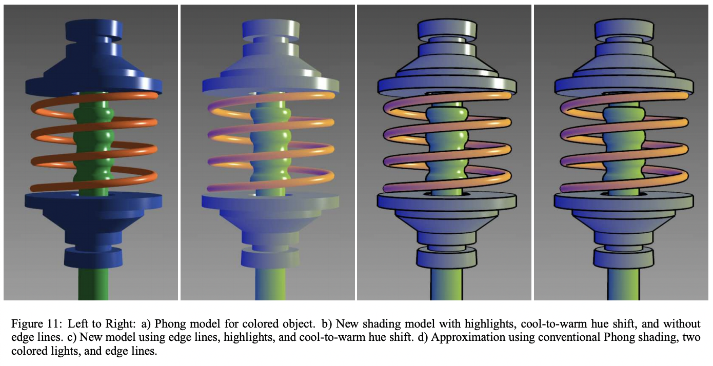

We first looked over the Three.js API documentation to get a feel of how and where to start coding our shaders. We first created a scene on Three.js with point lights to highlight the objectt when Phong shading is implemented. Then, we selected the torus knot (provided by Three.js), as a base object for our technical illustration.
|  |
Next, we imported Phong shading, and applied it onto our torus knot in orer to create a specular material. This step is important because Phong shading is widely used in many technical illustrations and we would like to replicate that effect ass closely as possible.
We plan to implement the effects of a non-photorealistic lighting model for automatic technical illustration by creating a Phong model of an object, shading the model with highlights and cool to warm hue shift and also implementing edge lines. This will cause non photorealistic images to appear as if it was drawn for technical illustration. Descriptions for a technical illustration are stated as follows: edge lines that outline an object to give it shape, objects are shaded with intensities that are far from black or white with warmth and coolness of color that is indicative of its surface normal and shadowing will not be shown.
We will use a Phong lighting model as a basis for approximation of our model which implies that we will implement ambient, diffuse and specular lighting on the object. This will also help make the object seem more realistic and also more detailed for technical illustrations.
We hope we can create models that are similar to the ones in the paper where images do seem as if they are drawn for technical illustration. Our project will focus on creating convincing images and rendered objects that seem to be technically illustrated.
We plan to render images using first the default Phong shading and then our technical illustration shading to show how the different abstractions convey different information to the viewer.
Final Presentation Thu 5/6
Final Deliverables Thu 5/11
We will be mostly following the paper by Gooch, Gooch, Shirley, and Cohen: Gooch, A., Gooch, B., Shirley, P., & Cohen, E. (1998). A Non-Photorealistic Lighting Model For Automatic Technical Illustration. Retrieved from https://citeseerx.ist.psu.edu/viewdoc/download?doi=10.1.1.46.6762&rep=rep1&type=pdf
Project 4 code base (using pre-existing Phong shading implementation) https://cs184.eecs.berkeley.edu/sp21/docs/proj4